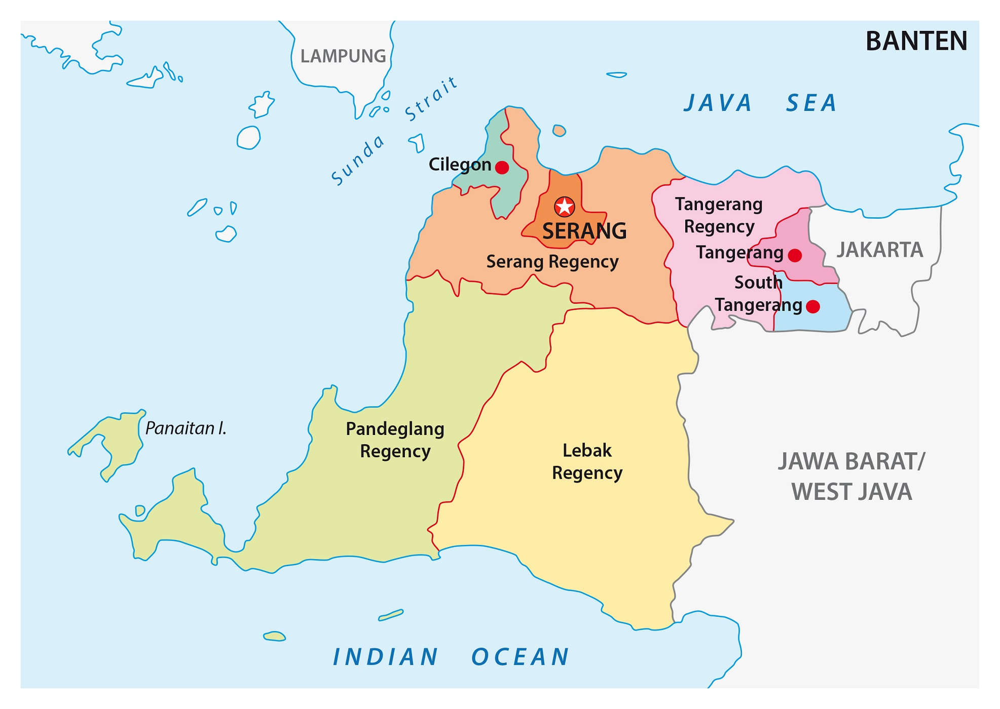

sejarah

Sejarah Banten memiliki akar yang dalam dan beragam, mencakup perjalanan panjang dari kerajaan-kerajaan kuno hingga menjadi sebuah provinsi di Indonesia yang berdiri pada tahun 2000. Banten memiliki peran bersejarah sebagai pusat perdagangan dan kerajaan yang kuat pada abad ke-16. Salah satu titik puncaknya adalah ketika Sultan Ageng Tirtayasa memimpin perlawanan melawan kolonialisasi Belanda pada akhir abad ke-17. Namun, setelah perlawanan sultan tersebut berhasil ditekan, Banten jatuh di bawah kekuasaan Belanda.
Pada abad ke-20, Banten menjadi bagian dari provinsi Jawa Barat sebelum akhirnya memperoleh status provinsi sendiri pada tahun 2000. Sejak itu, provinsi Banten terus berkembang dan menggabungkan sejarahnya yang kaya dengan pertumbuhan ekonomi dan perkembangan infrastruktur yang pesat. Wilayah ini menjadi tuan rumah berbagai aset budaya dan sejarah yang mencerminkan warisan lama dan visi masa depan yang cerah. Sejarah Banten adalah cerminan dari keragaman budaya, perjuangan, dan perkembangan yang telah membentuk provinsi ini menjadi apa yang kita kenal hari ini.
Geografis
Provinsi Banten, terletak di Pulau Jawa, Indonesia, adalah wilayah yang memiliki karakter geografis yang sangat menarik. Di sebelah barat, provinsi ini berbatasan dengan Samudra Hindia, yang menawarkan pantai-pantai indah dengan pasir putih dan ombak yang mengundang para pengunjung. Wilayah pesisir Banten dikenal sebagai destinasi pariwisata populer, dengan tempat-tempat seperti Pantai Anyer dan Pantai Carita yang menawarkan pesona alam yang memukau.
Di sebelah timur, Banten memiliki topografi yang beragam, termasuk pegunungan dan dataran rendah. Gunung Krakatau, sebuah gunung berapi aktif yang terletak di Selat Sunda, juga termasuk dalam wilayah provinsi ini. Provinsi Banten memiliki iklim tropis dengan curah hujan yang beragam sepanjang tahun, yang memengaruhi pertanian dan kehidupan sehari-hari masyarakat. Geografis Banten menciptakan lanskap yang kontras, yang menggabungkan pesona pantai yang menakjubkan dengan keindahan alam pedesaan yang subur, menjadikannya provinsi yang menarik untuk dijelajahi.
Wisata
Banten adalah surga bagi para pencinta wisata alam dan sejarah di Indonesia. Dengan pantai-pantai yang menakjubkan seperti Pantai Anyer, Pantai Sawarna, dan Pantai Carita, pengunjung dapat menikmati pasir putih, ombak yang menantang, dan keindahan bawah laut yang luar biasa untuk bersnorkel dan menyelam. Selain itu, provinsi ini juga dikenal karena situs bersejarahnya, termasuk Benteng Speelwijk dan Situs Gunung Krakatau, yang menghadirkan warisan budaya dan keindahan alam yang tak terlupakan. Banten menawarkan pengalaman wisata yang beragam, mulai dari keindahan alam pantai hingga perjalanan ke masa lalu yang memikat, menjadikannya tujuan yang menarik bagi para pelancong.